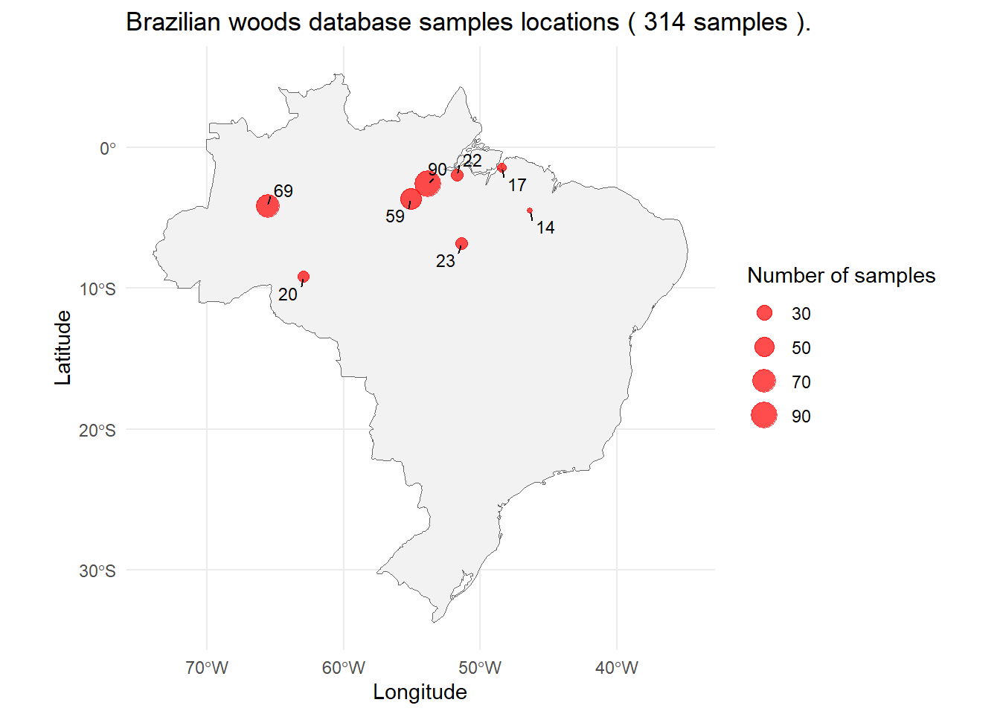
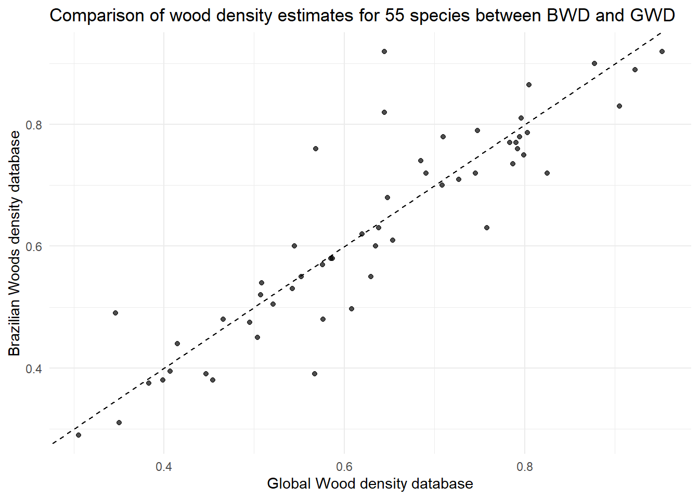
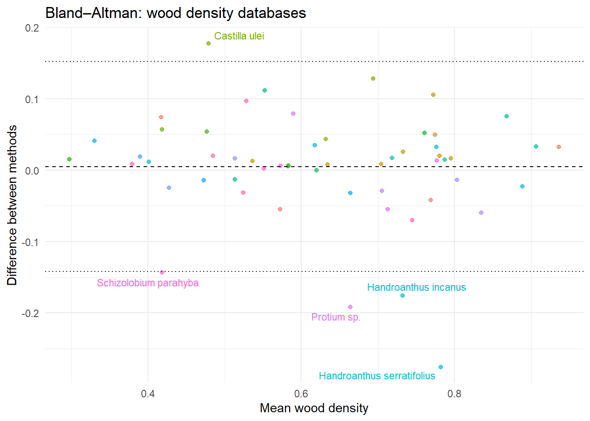
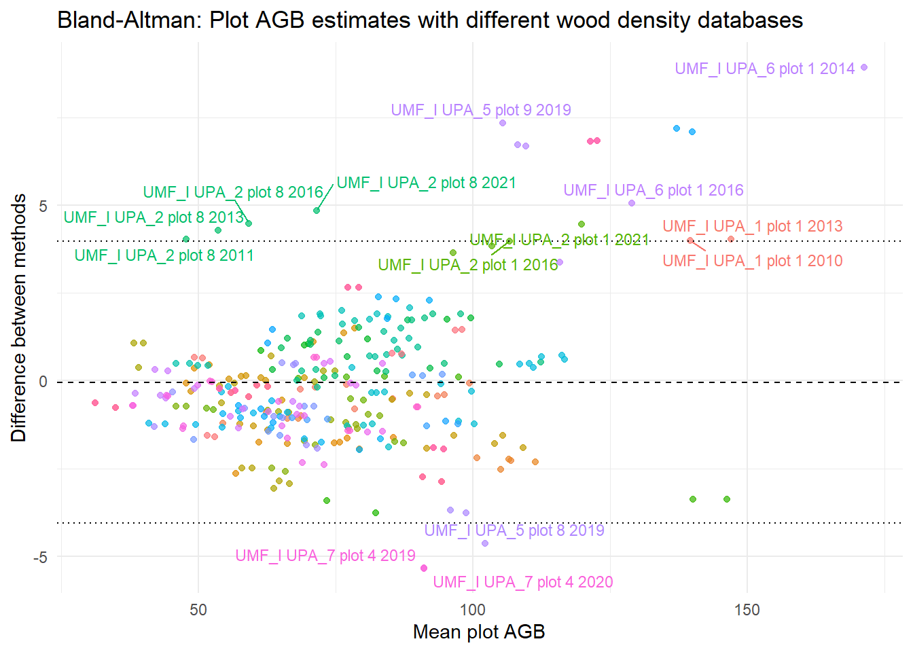

5 Comparing wood density databases
5.1 Introduction
This script compares biomass estimates derived from different wood density databases. We use the Global Wood Database (Chave et al. 2009), available through the BIOMASS package, and the Brazilian Woods Database (https://lpf.florestal.gov.br/en-us/brazilian-woods) from Brazilian Forest Service.
5.2 Setup
5.3 Comparing different wood databases
BWD has many samples collected in Jamari Forest, as we can see below. We obtained the basic wood density information (g/m³) and the sample collection location for each species from the BWD website. There is no specific coordinate for the sampling location; therefore, we assigned a central coordinate to each collection location in order to determine the geographic region of origin of the sample.
Code
bwd <- read.csv("data/wood_density/tabela_densidade_coordenadas.csv")
bwd_clean <- bwd %>%
filter(!is.na(long), !is.na(lat))
pts_bwd <- st_as_sf(
bwd_clean,
coords = c("long", "lat"),
crs = 4326 # WGS84 (graus decimais)
)
pts_bwd_count <- pts_bwd %>%
st_coordinates() %>%
as.data.frame() %>%
group_by(X, Y) %>%
summarise(n = n()) %>%
ungroup() %>%
st_as_sf(coords = c("X", "Y"), crs = st_crs(pts_bwd))
brasil <- ne_countries(
scale = "medium",
country = "Brazil",
returnclass = "sf"
)
ggplot() +
geom_sf(data = brasil,
fill = "gray95",
color = "gray40") +
geom_sf(data = pts_bwd_count,
aes(size = n),
color = "red",
alpha = 0.7) +
geom_text_repel(
data = pts_bwd_count,
aes(label = n,
geometry = geometry),
stat = "sf_coordinates",
size = 3,
min.segment.length = 0
) +
scale_size_continuous(name = "Number of samples") +
coord_sf() +
theme_minimal() +
labs(
title = paste("Brazilian woods database samples locations (",
nrow(pts_bwd),
"samples )."),
x = "Longitude",
y = "Latitude"
)
5.4 Estimating biomass with BWD
We will use permanent plots measurements from Jamari National Forest. The Wood density estimates presented here are only for species the species present in the permanent plots.
In BWD there are multiple samples for the same species. We calculated mean basic wood density for each species with multiple samples. Then we converted bwd table to BIOMASS wood density table format.
We retrieved wood density from Gobal Wood Database (Chave et al. 2009) using BIOMASS.
Code
Permanent plots of APUs:
UMF_I UPA_1
UMF_I UPA_10
UMF_I UPA_13
UMF_I UPA_2
UMF_I UPA_3
UMF_I UPA_4
UMF_I UPA_5
UMF_I UPA_6
UMF_I UPA_7
UMF_I UPA_8
UMF_I UPA_9
UMF_IV UPA_15Years of measurement:
2010
2013
2016
2018
2021
2015
2017
2023
2020
2022
2011
2012
2014
2019Code
bwd <- bwd %>%
group_by(nome_cientifico) %>%
summarise(mean_wd = mean(densidade_basica),
.groups = "drop")
bwd_biomass <- bwd %>%
tidyr::separate("nome_cientifico",
c("genero","epiteto"),
" ")
names(bwd_biomass) <- c("genus","species","wd")
taxo <- data.frame(
genusCorrected = pps$genero,
speciesCorrected = pps$epiteto,
stringsAsFactors = FALSE
)
w_density <- getWoodDensity(genus = taxo$genusCorrected,
species = taxo$speciesCorrected)The reference dataset contains 16467 wood density valuesYour taxonomic table contains 104 taxaCode
densidades <- bwd_biomass %>%
inner_join(w_density,
by = c("genus",
"species")) %>%
select(genus,
species,
WD_global = meanWD,
WD_brazil = wd)
densidades <- unique(densidades)
ggplot(densidades, aes(x = WD_global,
y = WD_brazil)) +
geom_point(alpha = 0.7) +
geom_abline(slope = 1,
intercept = 0,
linetype = "dashed") +
labs(
x = "Global Wood density database",
y = "Brazilian Woods density database",
title = paste("Comparison of wood density estimates for",
nrow(densidades),
"species between BWD and GWD")
) +
theme_minimal()
BWD has wood density of 275 species. BWD and GWD share 55 species in common.
We can use Bland-Altman graphic to see differences between wood density databases. I will highlight species that are out of limits of agreement.
Code
densidades$mean_density <- (densidades$WD_global + densidades$WD_brazil) / 2
densidades$diff_density <- densidades$WD_global - densidades$WD_brazil
bias <- mean(densidades$diff_density,
na.rm = TRUE)
sd_diff <- sd(densidades$diff_density,
na.rm = TRUE)
loa_inf <- bias - 1.96 * sd_diff
loa_sup <- bias + 1.96 * sd_diff
densidades <- densidades %>%
mutate(fora_loa = diff_density < loa_inf | diff_density > loa_sup)
densidades$especie <- paste(densidades$genus,
densidades$species,
sep = " ")
ggplot(densidades, aes(x = mean_density,
y = diff_density,
color = especie)) +
geom_point(alpha = 0.7) +
geom_hline(yintercept = mean(densidades$diff_density,
na.rm = TRUE),
linetype = "dashed") +
geom_hline(yintercept = mean(densidades$diff_density,
na.rm = TRUE) +
1.96 * sd(densidades$diff_density,
na.rm = TRUE),
linetype = "dotted") +
geom_hline(yintercept = mean(densidades$diff_density,
na.rm = TRUE) -
1.96 * sd(densidades$diff_density,
na.rm = TRUE),
linetype = "dotted") +
geom_text_repel(
data = subset(densidades, fora_loa),
aes(label = especie),
size = 3,
show.legend = FALSE
) +
labs(
x = "Mean wood density",
y = "Difference between methods",
title = "Bland–Altman: wood density databases"
) +
theme_minimal() +
theme(legend.position = "none")
Let’s see the difference in biomass estimation.
Total tree height was obtained using the retrieveH function from the BIOMASS package, based on the central coordinates of the Jamari National Forest (Flona de Jamari). Biomass was estimated using the computeAGB function from the BIOMASS package, using the total height derived from retrieveH and the two wood density databases (the Global Wood Density Database and the Brazilian Wood Density Database). The BWD does not provide estimates of basic wood density for all species. When species-level values are unavailable, estimates from Global Wood Database will be used.
Each point represents one year of measurement for a plot. I will highlight plots with biomass estimation out of limits of agreement.
Code
w_density_BR <- left_join(w_density,
bwd_biomass,
by = c("species",
"genus"),
multiple = "any") %>%
mutate(wd = ifelse(!is.na(wd),
wd,
meanWD)) %>%
select(family,
genus,
species,
wd)
altura <- retrieveH(D = pps$diametrocm,
coord = c(-62.99,
-9.11
))
pps$altura <- altura$H
pps$AGB_Global <- computeAGB(D = pps$diametrocm,
WD = w_density$meanWD,
H = pps$altura)
pps$AGB_Brazilian <- computeAGB(D = pps$diametrocm,
WD = w_density_BR$wd,
H = pps$altura)
pps$plot <- paste(pps$UMF,pps$UPA,
"plot",
pps$p23_cdparcela,
pps$p23_cdmedicao)
pps_plots <- pps %>%
group_by(plot,
p23_cdmedicao) %>%
summarise("AGB_Global" = sum(AGB_Global),
"AGB_Brazilian" = sum(AGB_Brazilian))
pps_plots$mean_density <- (pps_plots$AGB_Global + pps_plots$AGB_Brazilian) / 2
pps_plots$diff_density <- pps_plots$AGB_Global - pps_plots$AGB_Brazilian
bias <- mean(pps_plots$diff_density,
na.rm = TRUE)
sd_diff <- sd(pps_plots$diff_density,
na.rm = TRUE)
loa_inf <- bias - 1.96 * sd_diff
loa_sup <- bias + 1.96 * sd_diff
pps_plots <- pps_plots %>%
mutate(fora_loa = diff_density < loa_inf | diff_density > loa_sup)
ggplot(pps_plots, aes(x = mean_density,
y = diff_density,
color = plot)) +
geom_point(alpha = 0.7) +
geom_hline(yintercept = mean(pps_plots$diff_density,
na.rm = TRUE),
linetype = "dashed") +
geom_hline(yintercept = mean(pps_plots$diff_density,
na.rm = TRUE) +
1.96 * sd(pps_plots$diff_density,
na.rm = TRUE),
linetype = "dotted") +
geom_hline(yintercept = mean(pps_plots$diff_density,
na.rm = TRUE) -
1.96 * sd(pps_plots$diff_density,
na.rm = TRUE),
linetype = "dotted") +
geom_text_repel(
data = subset(pps_plots,
fora_loa),
aes(label = plot),
size = 3,
show.legend = FALSE
) +
labs(
x = "Mean plot AGB",
y = "Difference between methods",
title = "Bland-Altman: Plot AGB estimates with different wood density databases"
) +
theme_minimal() +
theme(legend.position = "none")
Code
dif_AGBs <- pps_plots %>%
mutate(
diff = abs(AGB_Global - AGB_Brazilian),
diff_perc = (diff / AGB_Global) * 100
) %>%
select(plot, AGB_Global, AGB_Brazilian, diff, diff_perc) %>%
arrange(desc(diff_perc)) %>%
mutate(diff_perc = round(diff_perc, 2))
kable(dif_AGBs,
caption = "Absolute and relative difference between AGBs",
col.names = c("Plot", "AGB Global", "AGB Brazilian", "Difference", "Difference (%)")
) %>%
kable_styling(full_width = FALSE, position = "center") %>%
kableExtra::scroll_box(height = "400px", width = "100%")| Plot | AGB Global | AGB Brazilian | Difference | Difference (%) |
|---|---|---|---|---|
| UMF_I UPA_2 plot 8 2011 | 49.78417 | 45.76349 | 4.0206756 | 8.08 |
| UMF_I UPA_2 plot 8 2013 | 55.63526 | 51.35464 | 4.2806251 | 7.69 |
| UMF_I UPA_2 plot 8 2016 | 61.40135 | 56.92133 | 4.4800279 | 7.30 |
| UMF_I UPA_5 plot 9 2019 | 109.08370 | 101.74244 | 7.3412640 | 6.73 |
| UMF_I UPA_2 plot 8 2021 | 73.91046 | 69.07685 | 4.8336139 | 6.54 |
| UMF_I UPA_7 plot 4 2020 | 88.43654 | 93.77966 | 5.3431237 | 6.04 |
| UMF_I UPA_7 plot 4 2019 | 88.39637 | 93.73296 | 5.3365841 | 6.04 |
| UMF_I UPA_5 plot 9 2013 | 111.49535 | 104.78220 | 6.7131586 | 6.02 |
| UMF_I UPA_5 plot 9 2015 | 112.98623 | 106.31004 | 6.6761913 | 5.91 |
| UMF_I UPA_8 plot 1 2017 | 124.77302 | 117.94769 | 6.8253253 | 5.47 |
| UMF_I UPA_9 plot 1 2017 | 124.77302 | 117.94769 | 6.8253253 | 5.47 |
| UMF_I UPA_8 plot 1 2019 | 126.01309 | 119.18066 | 6.8324362 | 5.42 |
| UMF_I UPA_9 plot 1 2019 | 126.01309 | 119.18066 | 6.8324362 | 5.42 |
| UMF_I UPA_4 plot 9 2012 | 140.66985 | 133.49095 | 7.1788979 | 5.10 |
| UMF_I UPA_6 plot 1 2014 | 175.80782 | 166.87583 | 8.9319891 | 5.08 |
| UMF_I UPA_10 plot 4 2023 | 62.14742 | 65.22646 | 3.0790489 | 4.95 |
| UMF_I UPA_4 plot 9 2014 | 143.46225 | 136.38440 | 7.0778559 | 4.93 |
| UMF_I UPA_2 plot 2 2016 | 71.63603 | 75.05387 | 3.4178394 | 4.77 |
| UMF_I UPA_1 plot 5 2010 | 55.47410 | 58.11771 | 2.6436094 | 4.77 |
| UMF_I UPA_2 plot 2 2021 | 80.44123 | 84.21434 | 3.7731018 | 4.69 |
| UMF_I UPA_5 plot 8 2019 | 99.86790 | 104.50618 | 4.6382782 | 4.64 |
| UMF_I UPA_10 plot 4 2015 | 63.31582 | 66.16888 | 2.8530553 | 4.51 |
| UMF_I UPA_10 plot 4 2017 | 65.12840 | 68.05299 | 2.9245835 | 4.49 |
| UMF_I UPA_10 plot 3 2015 | 56.63193 | 59.12236 | 2.4904342 | 4.40 |
| UMF_I UPA_10 plot 3 2017 | 58.55062 | 61.02998 | 2.4793597 | 4.23 |
| UMF_I UPA_13 plot 3 2020 | 62.05757 | 64.55164 | 2.4940658 | 4.02 |
| UMF_I UPA_13 plot 3 2022 | 64.53398 | 67.12730 | 2.5933256 | 4.02 |
| UMF_I UPA_5 plot 8 2013 | 94.08163 | 97.77032 | 3.6886900 | 3.92 |
| UMF_I UPA_5 plot 8 2015 | 96.84418 | 100.61929 | 3.7751154 | 3.90 |
| UMF_I UPA_6 plot 1 2016 | 131.47873 | 126.41455 | 5.0641793 | 3.85 |
| UMF_I UPA_2 plot 1 2011 | 98.18137 | 94.53309 | 3.6482772 | 3.72 |
| UMF_I UPA_2 plot 1 2016 | 108.69576 | 104.71439 | 3.9813761 | 3.66 |
| UMF_I UPA_2 plot 1 2021 | 121.96488 | 117.51318 | 4.4516999 | 3.65 |
| UMF_I UPA_2 plot 1 2013 | 105.35751 | 101.52762 | 3.8298872 | 3.64 |
| UMF_I UPA_5 plot 3 2019 | 48.23569 | 49.90397 | 1.6682865 | 3.46 |
| UMF_I UPA_6 plot 9 2014 | 67.70705 | 70.03345 | 2.3264038 | 3.44 |
| UMF_I UPA_8 plot 4 2017 | 78.54076 | 75.87703 | 2.6637348 | 3.39 |
| UMF_I UPA_9 plot 4 2017 | 78.54076 | 75.87703 | 2.6637348 | 3.39 |
| UMF_I UPA_6 plot 9 2016 | 71.71043 | 74.10109 | 2.3906627 | 3.33 |
| UMF_I UPA_8 plot 4 2019 | 80.51725 | 77.86603 | 2.6512117 | 3.29 |
| UMF_I UPA_9 plot 4 2019 | 80.51725 | 77.86603 | 2.6512117 | 3.29 |
| UMF_I UPA_5 plot 7 2019 | 41.30085 | 42.60685 | 1.3060015 | 3.16 |
| UMF_I UPA_8 plot 6 2019 | 92.84010 | 95.71768 | 2.8775724 | 3.10 |
| UMF_I UPA_9 plot 6 2019 | 92.84010 | 95.71768 | 2.8775724 | 3.10 |
| UMF_IV UPA_15 plot 3 2020 | 50.75750 | 52.32646 | 1.5689553 | 3.09 |
| UMF_I UPA_8 plot 6 2017 | 89.49599 | 92.23748 | 2.7414901 | 3.06 |
| UMF_I UPA_9 plot 6 2017 | 89.49599 | 92.23748 | 2.7414901 | 3.06 |
| UMF_IV UPA_15 plot 3 2022 | 52.16722 | 53.76304 | 1.5958216 | 3.06 |
| UMF_I UPA_4 plot 3 2012 | 40.24498 | 41.46130 | 1.2163188 | 3.02 |
| UMF_I UPA_7 plot 2 2020 | 46.42593 | 47.78968 | 1.3637562 | 2.94 |
| UMF_I UPA_1 plot 5 2013 | 60.07885 | 61.83601 | 1.7571584 | 2.92 |
| UMF_I UPA_6 plot 1 2020 | 117.53119 | 114.16292 | 3.3682747 | 2.87 |
| UMF_I UPA_4 plot 3 2014 | 43.32220 | 44.56010 | 1.2378913 | 2.86 |
| UMF_I UPA_4 plot 7 2012 | 83.91347 | 81.52543 | 2.3880359 | 2.85 |
| UMF_I UPA_1 plot 1 2010 | 141.59067 | 137.59897 | 3.9916962 | 2.82 |
| UMF_I UPA_7 plot 2 2019 | 46.62393 | 47.92261 | 1.2986812 | 2.79 |
| UMF_I UPA_10 plot 5 2015 | 38.72413 | 37.64722 | 1.0769117 | 2.78 |
| UMF_I UPA_1 plot 6 2010 | 65.29853 | 67.08520 | 1.7866696 | 2.74 |
| UMF_I UPA_5 plot 7 2015 | 70.60840 | 72.53069 | 1.9222901 | 2.72 |
| UMF_I UPA_1 plot 1 2013 | 148.99734 | 144.96700 | 4.0303350 | 2.70 |
| UMF_I UPA_4 plot 7 2014 | 87.17371 | 84.84377 | 2.3299357 | 2.67 |
| UMF_I UPA_5 plot 7 2013 | 68.70582 | 70.53507 | 1.8292548 | 2.66 |
| UMF_I UPA_3 plot 6 2012 | 69.67803 | 67.83784 | 1.8401950 | 2.64 |
| UMF_I UPA_10 plot 5 2017 | 40.46484 | 39.40227 | 1.0625623 | 2.63 |
| UMF_I UPA_13 plot 2 2022 | 70.29663 | 72.12250 | 1.8258754 | 2.60 |
| UMF_I UPA_3 plot 6 2013 | 73.11365 | 71.21718 | 1.8964629 | 2.59 |
| UMF_I UPA_3 plot 6 2023 | 77.08552 | 75.09241 | 1.9931084 | 2.59 |
| UMF_I UPA_4 plot 3 2018 | 48.82881 | 50.08417 | 1.2553580 | 2.57 |
| UMF_I UPA_13 plot 2 2020 | 68.37757 | 70.09773 | 1.7201612 | 2.52 |
| UMF_I UPA_3 plot 6 2017 | 73.11969 | 71.28398 | 1.8357061 | 2.51 |
| UMF_I UPA_4 plot 5 2018 | 78.34285 | 80.30077 | 1.9579185 | 2.50 |
| UMF_I UPA_6 plot 9 2020 | 65.41002 | 67.04035 | 1.6303362 | 2.49 |
| UMF_I UPA_1 plot 4 2010 | 78.28289 | 80.22775 | 1.9448626 | 2.48 |
| UMF_I UPA_4 plot 3 2023 | 53.59144 | 54.91902 | 1.3275800 | 2.48 |
| UMF_I UPA_4 plot 5 2014 | 71.53291 | 73.28962 | 1.7567086 | 2.46 |
| UMF_I UPA_4 plot 7 2018 | 93.20928 | 90.92654 | 2.2827417 | 2.45 |
| UMF_I UPA_5 plot 3 2015 | 63.98371 | 65.54751 | 1.5638015 | 2.44 |
| UMF_I UPA_2 plot 2 2011 | 138.44420 | 141.81538 | 3.3711764 | 2.44 |
| UMF_I UPA_4 plot 5 2012 | 68.39018 | 70.05366 | 1.6634802 | 2.43 |
| UMF_I UPA_1 plot 3 2016 | 103.81550 | 106.34005 | 2.5245486 | 2.43 |
| UMF_I UPA_1 plot 4 2018 | 73.86184 | 75.63370 | 1.7718551 | 2.40 |
| UMF_I UPA_6 plot 3 2020 | 56.57611 | 57.92632 | 1.3502119 | 2.39 |
| UMF_I UPA_2 plot 2 2013 | 144.59019 | 147.97494 | 3.3847444 | 2.34 |
| UMF_I UPA_1 plot 4 2021 | 74.88661 | 76.63932 | 1.7527131 | 2.34 |
| UMF_I UPA_5 plot 3 2013 | 61.97244 | 63.41857 | 1.4461294 | 2.33 |
| UMF_I UPA_3 plot 7 2023 | 89.55115 | 87.47834 | 2.0728058 | 2.31 |
| UMF_I UPA_3 plot 7 2017 | 83.44802 | 81.54640 | 1.9016255 | 2.28 |
| UMF_I UPA_4 plot 9 2023 | 64.19795 | 62.73879 | 1.4591629 | 2.27 |
| UMF_I UPA_1 plot 2 2010 | 53.79504 | 55.01628 | 1.2212372 | 2.27 |
| UMF_I UPA_1 plot 8 2021 | 61.87745 | 63.27444 | 1.3969969 | 2.26 |
| UMF_I UPA_3 plot 8 2023 | 83.69963 | 85.58468 | 1.8850439 | 2.25 |
| UMF_I UPA_8 plot 5 2019 | 34.47048 | 35.23482 | 0.7643388 | 2.22 |
| UMF_I UPA_9 plot 5 2019 | 34.47048 | 35.23482 | 0.7643388 | 2.22 |
| UMF_I UPA_1 plot 3 2010 | 99.65737 | 101.84870 | 2.1913247 | 2.20 |
| UMF_I UPA_1 plot 8 2016 | 56.88342 | 58.12381 | 1.2403869 | 2.18 |
| UMF_I UPA_1 plot 8 2018 | 59.28152 | 60.56873 | 1.2872083 | 2.17 |
| UMF_I UPA_3 plot 4 2023 | 79.33470 | 77.61907 | 1.7156268 | 2.16 |
| UMF_I UPA_1 plot 3 2013 | 105.75754 | 108.03683 | 2.2792864 | 2.16 |
| UMF_I UPA_4 plot 6 2018 | 62.57151 | 63.91201 | 1.3404997 | 2.14 |
| UMF_I UPA_1 plot 4 2016 | 76.24741 | 77.87986 | 1.6324443 | 2.14 |
| UMF_I UPA_1 plot 9 2010 | 90.62348 | 92.55793 | 1.9344442 | 2.13 |
| UMF_I UPA_3 plot 7 2012 | 82.01588 | 80.26592 | 1.7499671 | 2.13 |
| UMF_I UPA_3 plot 7 2013 | 85.42467 | 83.60381 | 1.8208562 | 2.13 |
| UMF_I UPA_1 plot 3 2018 | 105.37675 | 107.62059 | 2.2438437 | 2.13 |
| UMF_I UPA_1 plot 3 2021 | 110.20383 | 112.51870 | 2.3148729 | 2.10 |
| UMF_I UPA_3 plot 4 2017 | 77.02731 | 75.41305 | 1.6142586 | 2.10 |
| UMF_I UPA_8 plot 3 2017 | 91.84758 | 93.75445 | 1.9068729 | 2.08 |
| UMF_I UPA_9 plot 3 2017 | 91.84758 | 93.75445 | 1.9068729 | 2.08 |
| UMF_I UPA_8 plot 3 2019 | 93.68835 | 95.62978 | 1.9414310 | 2.07 |
| UMF_I UPA_9 plot 3 2019 | 93.68835 | 95.62978 | 1.9414310 | 2.07 |
| UMF_I UPA_4 plot 7 2023 | 85.31005 | 83.55186 | 1.7581920 | 2.06 |
| UMF_I UPA_8 plot 5 2017 | 30.83416 | 31.46883 | 0.6346720 | 2.06 |
| UMF_I UPA_9 plot 5 2017 | 30.83416 | 31.46883 | 0.6346720 | 2.06 |
| UMF_I UPA_13 plot 6 2022 | 86.40409 | 88.18142 | 1.7773310 | 2.06 |
| UMF_I UPA_13 plot 6 2020 | 84.81513 | 86.55165 | 1.7365152 | 2.05 |
| UMF_I UPA_3 plot 1 2017 | 93.58411 | 91.68251 | 1.9015995 | 2.03 |
| UMF_I UPA_4 plot 5 2023 | 82.27265 | 83.93260 | 1.6599519 | 2.02 |
| UMF_I UPA_6 plot 7 2020 | 64.48849 | 65.78338 | 1.2948954 | 2.01 |
| UMF_I UPA_3 plot 1 2013 | 92.12634 | 90.34460 | 1.7817429 | 1.93 |
| UMF_I UPA_2 plot 6 2021 | 88.92697 | 87.20792 | 1.7190527 | 1.93 |
| UMF_I UPA_3 plot 1 2012 | 89.74763 | 88.01856 | 1.7290652 | 1.93 |
| UMF_I UPA_3 plot 1 2023 | 98.74674 | 96.84718 | 1.8995586 | 1.92 |
| UMF_I UPA_4 plot 8 2023 | 62.91237 | 64.11419 | 1.2018205 | 1.91 |
| UMF_I UPA_1 plot 4 2013 | 84.71152 | 86.32938 | 1.6178511 | 1.91 |
| UMF_I UPA_2 plot 6 2013 | 72.39286 | 71.01508 | 1.3777797 | 1.90 |
| UMF_I UPA_2 plot 6 2016 | 79.88236 | 78.36775 | 1.5146101 | 1.90 |
| UMF_I UPA_7 plot 3 2020 | 37.75361 | 38.46851 | 0.7148984 | 1.89 |
| UMF_I UPA_7 plot 3 2019 | 37.58997 | 38.30057 | 0.7106029 | 1.89 |
| UMF_I UPA_1 plot 6 2018 | 79.22584 | 77.73220 | 1.4936418 | 1.89 |
| UMF_I UPA_7 plot 6 2020 | 76.84243 | 78.26924 | 1.4268055 | 1.86 |
| UMF_I UPA_7 plot 6 2019 | 76.45739 | 77.87579 | 1.4183963 | 1.86 |
| UMF_I UPA_6 plot 4 2020 | 55.27042 | 56.29516 | 1.0247416 | 1.85 |
| UMF_I UPA_4 plot 6 2014 | 57.15729 | 58.20641 | 1.0491145 | 1.84 |
| UMF_I UPA_6 plot 8 2014 | 80.01950 | 81.47478 | 1.4552807 | 1.82 |
| UMF_I UPA_2 plot 4 2011 | 96.16023 | 94.41840 | 1.7418342 | 1.81 |
| UMF_I UPA_2 plot 6 2011 | 66.75033 | 65.54787 | 1.2024664 | 1.80 |
| UMF_I UPA_2 plot 4 2013 | 100.56273 | 98.77820 | 1.7845297 | 1.77 |
| UMF_I UPA_1 plot 9 2021 | 108.15476 | 110.06666 | 1.9118998 | 1.77 |
| UMF_I UPA_4 plot 6 2012 | 53.90106 | 54.85001 | 0.9489575 | 1.76 |
| UMF_I UPA_10 plot 8 2015 | 76.60485 | 77.95310 | 1.3482513 | 1.76 |
| UMF_I UPA_1 plot 6 2016 | 77.12099 | 75.76869 | 1.3523052 | 1.75 |
| UMF_I UPA_10 plot 8 2017 | 78.26024 | 79.62969 | 1.3694572 | 1.75 |
| UMF_I UPA_1 plot 9 2018 | 103.01691 | 104.81830 | 1.8013842 | 1.75 |
| UMF_I UPA_6 plot 8 2016 | 82.73919 | 84.18556 | 1.4463757 | 1.75 |
| UMF_I UPA_3 plot 2 2023 | 87.55731 | 86.05718 | 1.5001349 | 1.71 |
| UMF_I UPA_4 plot 9 2018 | 63.08077 | 62.01486 | 1.0659035 | 1.69 |
| UMF_I UPA_3 plot 8 2012 | 76.48495 | 77.77480 | 1.2898512 | 1.69 |
| UMF_I UPA_4 plot 8 2018 | 61.43267 | 62.45680 | 1.0241310 | 1.67 |
| UMF_I UPA_3 plot 2 2017 | 84.48085 | 83.08389 | 1.3969600 | 1.65 |
| UMF_I UPA_1 plot 2 2016 | 65.67454 | 66.75800 | 1.0834597 | 1.65 |
| UMF_I UPA_1 plot 9 2013 | 95.79155 | 97.35707 | 1.5655202 | 1.63 |
| UMF_I UPA_5 plot 5 2015 | 64.84191 | 65.89449 | 1.0525843 | 1.62 |
| UMF_I UPA_5 plot 5 2013 | 63.19198 | 64.21549 | 1.0235017 | 1.62 |
| UMF_I UPA_5 plot 10 2015 | 69.19741 | 70.31497 | 1.1175542 | 1.62 |
| UMF_I UPA_2 plot 7 2016 | 70.90359 | 69.76314 | 1.1404425 | 1.61 |
| UMF_I UPA_3 plot 8 2013 | 79.42413 | 80.69837 | 1.2742404 | 1.60 |
| UMF_I UPA_13 plot 1 2022 | 78.01820 | 79.26652 | 1.2483240 | 1.60 |
| UMF_I UPA_4 plot 6 2023 | 64.34666 | 65.37483 | 1.0281715 | 1.60 |
| UMF_I UPA_1 plot 2 2021 | 67.56413 | 68.64286 | 1.0787234 | 1.60 |
| UMF_I UPA_13 plot 5 2020 | 45.56140 | 46.28546 | 0.7240602 | 1.59 |
| UMF_I UPA_13 plot 8 2022 | 52.23611 | 53.06279 | 0.8266777 | 1.58 |
| UMF_I UPA_5 plot 10 2013 | 66.57363 | 67.62568 | 1.0520450 | 1.58 |
| UMF_I UPA_13 plot 1 2020 | 76.25764 | 77.45406 | 1.1964251 | 1.57 |
| UMF_I UPA_1 plot 6 2013 | 71.46023 | 70.34148 | 1.1187464 | 1.57 |
| UMF_I UPA_13 plot 5 2022 | 47.39914 | 48.13703 | 0.7378831 | 1.56 |
| UMF_I UPA_4 plot 4 2014 | 59.50858 | 60.43472 | 0.9261397 | 1.56 |
| UMF_I UPA_13 plot 8 2020 | 50.98947 | 51.78075 | 0.7912733 | 1.55 |
| UMF_I UPA_3 plot 8 2017 | 81.09508 | 82.33227 | 1.2371862 | 1.53 |
| UMF_I UPA_4 plot 4 2012 | 56.87086 | 57.73384 | 0.8629793 | 1.52 |
| UMF_I UPA_5 plot 10 2019 | 72.95890 | 74.05974 | 1.1008397 | 1.51 |
| UMF_I UPA_10 plot 8 2023 | 73.56025 | 74.66892 | 1.1086706 | 1.51 |
| UMF_I UPA_1 plot 9 2016 | 104.66734 | 106.23096 | 1.5636226 | 1.49 |
| UMF_I UPA_2 plot 3 2016 | 70.50813 | 69.46436 | 1.0437755 | 1.48 |
| UMF_I UPA_2 plot 7 2021 | 76.13251 | 75.00818 | 1.1243280 | 1.48 |
| UMF_IV UPA_15 plot 2 2022 | 98.74045 | 97.28317 | 1.4572871 | 1.48 |
| UMF_IV UPA_15 plot 2 2020 | 97.45259 | 96.01660 | 1.4359886 | 1.47 |
| UMF_I UPA_1 plot 2 2018 | 68.20128 | 69.20472 | 1.0034468 | 1.47 |
| UMF_I UPA_2 plot 3 2021 | 81.37186 | 80.18205 | 1.1898072 | 1.46 |
| UMF_I UPA_2 plot 3 2013 | 69.79904 | 68.78026 | 1.0187847 | 1.46 |
| UMF_I UPA_1 plot 2 2013 | 61.88458 | 62.78657 | 0.9019917 | 1.46 |
| UMF_I UPA_6 plot 7 2016 | 68.70774 | 69.70901 | 1.0012759 | 1.46 |
| UMF_I UPA_2 plot 7 2013 | 70.89011 | 69.85988 | 1.0302270 | 1.45 |
| UMF_I UPA_6 plot 7 2014 | 67.47663 | 68.44021 | 0.9635778 | 1.43 |
| UMF_I UPA_5 plot 1 2019 | 90.86566 | 92.16302 | 1.2973597 | 1.43 |
| UMF_I UPA_2 plot 7 2011 | 65.49202 | 64.56168 | 0.9303363 | 1.42 |
| UMF_I UPA_6 plot 4 2016 | 62.23487 | 63.11545 | 0.8805732 | 1.41 |
| UMF_I UPA_6 plot 4 2014 | 57.61442 | 58.41779 | 0.8033667 | 1.39 |
| UMF_I UPA_10 plot 7 2017 | 64.17284 | 65.06394 | 0.8910982 | 1.39 |
| UMF_I UPA_4 plot 4 2018 | 65.74774 | 66.65737 | 0.9096273 | 1.38 |
| UMF_I UPA_2 plot 3 2011 | 61.81673 | 60.96325 | 0.8534875 | 1.38 |
| UMF_I UPA_10 plot 7 2015 | 62.10232 | 62.94780 | 0.8454744 | 1.36 |
| UMF_I UPA_10 plot 7 2023 | 66.00121 | 66.89919 | 0.8979759 | 1.36 |
| UMF_I UPA_3 plot 4 2013 | 88.96555 | 87.76129 | 1.2042664 | 1.35 |
| UMF_IV UPA_15 plot 4 2020 | 49.51833 | 48.84890 | 0.6694356 | 1.35 |
| UMF_I UPA_5 plot 4 2019 | 57.98692 | 58.76763 | 0.7807015 | 1.35 |
| UMF_I UPA_3 plot 4 2012 | 86.21513 | 85.06654 | 1.1485848 | 1.33 |
| UMF_I UPA_4 plot 8 2014 | 60.99722 | 61.79394 | 0.7967169 | 1.31 |
| UMF_I UPA_5 plot 1 2015 | 96.62997 | 97.86797 | 1.2379950 | 1.28 |
| UMF_IV UPA_15 plot 4 2022 | 51.02614 | 50.37884 | 0.6472966 | 1.27 |
| UMF_I UPA_4 plot 1 2014 | 99.55331 | 100.78863 | 1.2353146 | 1.24 |
| UMF_I UPA_4 plot 8 2012 | 56.95336 | 57.65442 | 0.7010619 | 1.23 |
| UMF_I UPA_5 plot 1 2013 | 94.39891 | 95.55004 | 1.1511343 | 1.22 |
| UMF_I UPA_13 plot 4 2022 | 82.50755 | 83.49894 | 0.9913893 | 1.20 |
| UMF_I UPA_13 plot 4 2020 | 80.37445 | 81.33181 | 0.9573547 | 1.19 |
| UMF_I UPA_4 plot 1 2012 | 96.85337 | 98.00653 | 1.1531593 | 1.19 |
| UMF_I UPA_10 plot 3 2023 | 53.80592 | 54.44106 | 0.6351407 | 1.18 |
| UMF_I UPA_6 plot 2 2020 | 43.71303 | 44.20093 | 0.4879055 | 1.12 |
| UMF_I UPA_10 plot 2 2023 | 63.50069 | 62.79932 | 0.7013696 | 1.10 |
| UMF_I UPA_6 plot 3 2016 | 68.01510 | 68.74598 | 0.7308836 | 1.07 |
| UMF_I UPA_3 plot 5 2012 | 46.09271 | 45.59783 | 0.4948804 | 1.07 |
| UMF_I UPA_3 plot 2 2013 | 90.47815 | 89.51823 | 0.9599262 | 1.06 |
| UMF_I UPA_5 plot 4 2013 | 68.88582 | 69.60691 | 0.7210914 | 1.05 |
| UMF_I UPA_3 plot 2 2012 | 86.64463 | 85.74108 | 0.9035441 | 1.04 |
| UMF_I UPA_5 plot 4 2015 | 70.69376 | 71.42920 | 0.7354401 | 1.04 |
| UMF_I UPA_1 plot 10 2010 | 78.02907 | 78.83287 | 0.8038040 | 1.03 |
| UMF_I UPA_3 plot 5 2013 | 48.58948 | 48.10361 | 0.4858700 | 1.00 |
| UMF_I UPA_7 plot 1 2020 | 44.15510 | 44.58483 | 0.4297336 | 0.97 |
| UMF_I UPA_7 plot 1 2019 | 43.97294 | 44.39937 | 0.4264318 | 0.97 |
| UMF_I UPA_6 plot 10 2016 | 42.77583 | 43.18735 | 0.4115190 | 0.96 |
| UMF_I UPA_7 plot 7 2019 | 71.38729 | 70.71808 | 0.6692170 | 0.94 |
| UMF_I UPA_10 plot 5 2023 | 39.22463 | 38.85817 | 0.3664532 | 0.93 |
| UMF_I UPA_6 plot 10 2014 | 38.23924 | 38.59431 | 0.3550766 | 0.93 |
| UMF_I UPA_7 plot 7 2020 | 71.77288 | 71.10683 | 0.6660560 | 0.93 |
| UMF_I UPA_6 plot 8 2020 | 64.27557 | 64.86683 | 0.5912558 | 0.92 |
| UMF_IV UPA_15 plot 1 2020 | 85.66747 | 84.89497 | 0.7725050 | 0.90 |
| UMF_I UPA_4 plot 4 2023 | 63.04084 | 63.60904 | 0.5682029 | 0.90 |
| UMF_I UPA_2 plot 4 2021 | 77.42662 | 76.74579 | 0.6808313 | 0.88 |
| UMF_I UPA_6 plot 3 2014 | 66.90394 | 67.49047 | 0.5865315 | 0.88 |
| UMF_IV UPA_15 plot 1 2022 | 87.35465 | 86.59366 | 0.7609898 | 0.87 |
| UMF_I UPA_3 plot 3 2013 | 84.61047 | 83.87583 | 0.7346432 | 0.87 |
| UMF_I UPA_1 plot 6 2021 | 64.89678 | 65.45626 | 0.5594741 | 0.86 |
| UMF_I UPA_1 plot 5 2021 | 52.16414 | 51.71444 | 0.4496935 | 0.86 |
| UMF_I UPA_3 plot 5 2017 | 50.05510 | 49.62707 | 0.4280239 | 0.86 |
| UMF_I UPA_3 plot 3 2012 | 81.53275 | 80.83752 | 0.6952286 | 0.85 |
| UMF_I UPA_3 plot 5 2023 | 51.86898 | 51.42948 | 0.4395053 | 0.85 |
| UMF_I UPA_7 plot 8 2020 | 89.54130 | 90.29225 | 0.7509533 | 0.84 |
| UMF_I UPA_7 plot 8 2019 | 89.34384 | 90.09226 | 0.7484156 | 0.84 |
| UMF_I UPA_3 plot 3 2017 | 82.47439 | 81.78563 | 0.6887610 | 0.84 |
| UMF_I UPA_3 plot 3 2023 | 87.47240 | 86.75832 | 0.7140807 | 0.82 |
| UMF_I UPA_8 plot 7 2019 | 58.83860 | 59.30061 | 0.4620051 | 0.79 |
| UMF_I UPA_9 plot 7 2019 | 58.83860 | 59.30061 | 0.4620051 | 0.79 |
| UMF_I UPA_5 plot 6 2013 | 65.40087 | 64.90076 | 0.5001170 | 0.76 |
| UMF_I UPA_6 plot 2 2014 | 42.16957 | 41.85613 | 0.3134444 | 0.74 |
| UMF_I UPA_6 plot 5 2014 | 74.23097 | 73.68984 | 0.5411267 | 0.73 |
| UMF_I UPA_5 plot 6 2015 | 67.84900 | 67.36446 | 0.4845461 | 0.71 |
| UMF_I UPA_1 plot 5 2018 | 49.43925 | 49.08748 | 0.3517625 | 0.71 |
| UMF_I UPA_5 plot 5 2019 | 45.13145 | 45.45032 | 0.3188698 | 0.71 |
| UMF_I UPA_13 plot 7 2022 | 79.77982 | 80.33656 | 0.5567359 | 0.70 |
| UMF_I UPA_13 plot 7 2020 | 77.39105 | 77.91421 | 0.5231639 | 0.68 |
| UMF_I UPA_5 plot 6 2019 | 67.57095 | 67.12176 | 0.4491889 | 0.66 |
| UMF_I UPA_6 plot 5 2016 | 73.14978 | 72.66495 | 0.4848302 | 0.66 |
| UMF_I UPA_10 plot 1 2023 | 84.99371 | 85.53011 | 0.5363965 | 0.63 |
| UMF_I UPA_1 plot 7 2010 | 48.37900 | 48.68136 | 0.3023567 | 0.62 |
| UMF_I UPA_4 plot 10 2023 | 116.53078 | 115.80563 | 0.7251568 | 0.62 |
| UMF_I UPA_8 plot 7 2017 | 55.68702 | 56.03201 | 0.3449874 | 0.62 |
| UMF_I UPA_9 plot 7 2017 | 55.68702 | 56.03201 | 0.3449874 | 0.62 |
| UMF_I UPA_4 plot 2 2018 | 54.00996 | 54.34087 | 0.3309095 | 0.61 |
| UMF_I UPA_6 plot 2 2016 | 44.53567 | 44.26407 | 0.2715974 | 0.61 |
| UMF_I UPA_4 plot 10 2012 | 112.79100 | 112.10639 | 0.6846067 | 0.61 |
| UMF_I UPA_1 plot 10 2013 | 85.05974 | 85.56967 | 0.5099252 | 0.60 |
| UMF_I UPA_6 plot 5 2020 | 83.75145 | 83.27018 | 0.4812609 | 0.57 |
| UMF_I UPA_2 plot 9 2016 | 95.03303 | 94.53889 | 0.4941441 | 0.52 |
| UMF_I UPA_4 plot 10 2014 | 116.95538 | 116.35725 | 0.5981315 | 0.51 |
| UMF_I UPA_8 plot 2 2019 | 56.53209 | 56.81470 | 0.2826127 | 0.50 |
| UMF_I UPA_9 plot 2 2019 | 56.53209 | 56.81470 | 0.2826127 | 0.50 |
| UMF_I UPA_2 plot 4 2016 | 63.55154 | 63.23934 | 0.3121983 | 0.49 |
| UMF_I UPA_3 plot 9 2023 | 78.08600 | 77.71997 | 0.3660287 | 0.47 |
| UMF_I UPA_2 plot 9 2021 | 112.67888 | 112.15249 | 0.5263914 | 0.47 |
| UMF_I UPA_1 plot 10 2016 | 93.31957 | 93.75176 | 0.4321846 | 0.46 |
| UMF_I UPA_6 plot 10 2020 | 49.06983 | 49.29309 | 0.2232562 | 0.45 |
| UMF_I UPA_2 plot 5 2021 | 104.99960 | 104.53147 | 0.4681390 | 0.45 |
| UMF_I UPA_3 plot 10 2013 | 71.59298 | 71.27629 | 0.3166953 | 0.44 |
| UMF_I UPA_10 plot 1 2017 | 91.30645 | 91.70979 | 0.4033415 | 0.44 |
| UMF_I UPA_4 plot 2 2012 | 108.80715 | 108.32791 | 0.4792397 | 0.44 |
| UMF_I UPA_4 plot 10 2018 | 110.48908 | 110.00539 | 0.4836951 | 0.44 |
| UMF_I UPA_3 plot 9 2012 | 81.29350 | 81.64255 | 0.3490532 | 0.43 |
| UMF_I UPA_1 plot 10 2018 | 94.52630 | 94.93131 | 0.4050089 | 0.43 |
| UMF_I UPA_8 plot 2 2017 | 53.73655 | 53.96239 | 0.2258434 | 0.42 |
| UMF_I UPA_9 plot 2 2017 | 53.73655 | 53.96239 | 0.2258434 | 0.42 |
| UMF_I UPA_3 plot 9 2017 | 82.17611 | 82.51290 | 0.3367915 | 0.41 |
| UMF_I UPA_3 plot 10 2012 | 68.93371 | 68.65249 | 0.2812111 | 0.41 |
| UMF_I UPA_10 plot 1 2015 | 88.26045 | 88.61520 | 0.3547438 | 0.40 |
| UMF_I UPA_2 plot 5 2016 | 92.29810 | 91.94119 | 0.3569125 | 0.39 |
| UMF_I UPA_10 plot 6 2017 | 75.02884 | 74.74635 | 0.2824919 | 0.38 |
| UMF_I UPA_3 plot 9 2013 | 83.69625 | 84.00952 | 0.3132760 | 0.37 |
| UMF_I UPA_10 plot 6 2015 | 72.87267 | 72.60231 | 0.2703594 | 0.37 |
| UMF_I UPA_1 plot 1 2016 | 68.44220 | 68.69547 | 0.2532788 | 0.37 |
| UMF_I UPA_4 plot 2 2014 | 111.15618 | 110.77485 | 0.3813256 | 0.34 |
| UMF_I UPA_2 plot 5 2013 | 82.59449 | 82.32679 | 0.2677017 | 0.32 |
| UMF_I UPA_4 plot 1 2023 | 99.61186 | 99.91806 | 0.3062021 | 0.31 |
| UMF_I UPA_2 plot 9 2013 | 84.28983 | 84.03138 | 0.2584545 | 0.31 |
| UMF_I UPA_4 plot 2 2023 | 55.26882 | 55.43507 | 0.1662474 | 0.30 |
| UMF_I UPA_8 plot 8 2019 | 62.52768 | 62.69680 | 0.1691232 | 0.27 |
| UMF_I UPA_9 plot 8 2019 | 62.52768 | 62.69680 | 0.1691232 | 0.27 |
| UMF_I UPA_1 plot 1 2018 | 71.14094 | 71.33313 | 0.1921936 | 0.27 |
| UMF_I UPA_10 plot 2 2015 | 53.74205 | 53.88480 | 0.1427504 | 0.27 |
| UMF_I UPA_3 plot 10 2023 | 71.49882 | 71.68077 | 0.1819545 | 0.25 |
| UMF_I UPA_1 plot 7 2018 | 58.71161 | 58.56780 | 0.1438099 | 0.24 |
| UMF_I UPA_6 plot 6 2020 | 49.78098 | 49.90245 | 0.1214775 | 0.24 |
| UMF_I UPA_8 plot 8 2017 | 60.54031 | 60.67592 | 0.1356164 | 0.22 |
| UMF_I UPA_9 plot 8 2017 | 60.54031 | 60.67592 | 0.1356164 | 0.22 |
| UMF_I UPA_1 plot 7 2016 | 57.77350 | 57.65079 | 0.1227096 | 0.21 |
| UMF_I UPA_2 plot 9 2011 | 74.85400 | 74.71161 | 0.1423887 | 0.19 |
| UMF_I UPA_5 plot 2 2019 | 94.52580 | 94.35240 | 0.1734021 | 0.18 |
| UMF_I UPA_5 plot 2 2013 | 89.07632 | 88.91380 | 0.1625188 | 0.18 |
| UMF_I UPA_6 plot 6 2016 | 78.62709 | 78.75516 | 0.1280660 | 0.16 |
| UMF_I UPA_5 plot 2 2015 | 90.92365 | 90.77653 | 0.1471140 | 0.16 |
| UMF_I UPA_2 plot 10 2016 | 83.98366 | 83.85487 | 0.1287838 | 0.15 |
| UMF_I UPA_2 plot 10 2013 | 77.00184 | 76.89262 | 0.1092198 | 0.14 |
| UMF_I UPA_1 plot 5 2016 | 47.68992 | 47.75724 | 0.0673127 | 0.14 |
| UMF_I UPA_1 plot 1 2021 | 76.89511 | 77.00218 | 0.1070777 | 0.14 |
| UMF_I UPA_1 plot 7 2021 | 61.43515 | 61.35126 | 0.0838844 | 0.14 |
| UMF_I UPA_2 plot 5 2011 | 72.96436 | 72.87122 | 0.0931383 | 0.13 |
| UMF_I UPA_10 plot 2 2017 | 56.43735 | 56.50327 | 0.0659212 | 0.12 |
| UMF_I UPA_1 plot 8 2013 | 69.36293 | 69.28518 | 0.0777496 | 0.11 |
| UMF_I UPA_2 plot 10 2021 | 97.49249 | 97.38766 | 0.1048290 | 0.11 |
| UMF_I UPA_2 plot 10 2011 | 68.19918 | 68.13211 | 0.0670619 | 0.10 |
| UMF_I UPA_4 plot 1 2018 | 94.11279 | 94.20081 | 0.0880225 | 0.09 |
| UMF_I UPA_6 plot 6 2014 | 77.67906 | 77.74176 | 0.0627007 | 0.08 |
| UMF_I UPA_1 plot 10 2021 | 99.37983 | 99.45315 | 0.0733164 | 0.07 |
| UMF_I UPA_1 plot 7 2013 | 55.56796 | 55.52756 | 0.0404060 | 0.07 |
| UMF_I UPA_7 plot 5 2020 | 52.46662 | 52.49355 | 0.0269255 | 0.05 |
| UMF_I UPA_10 plot 6 2023 | 71.15509 | 71.17819 | 0.0230965 | 0.03 |
| UMF_I UPA_1 plot 8 2010 | 62.20382 | 62.18935 | 0.0144732 | 0.02 |
| UMF_I UPA_7 plot 5 2019 | 52.01084 | 52.01619 | 0.0053426 | 0.01 |
| UMF_I UPA_3 plot 10 2017 | 67.96002 | 67.96002 | 0.0000056 | 0.00 |
We can see as much as 8.08 % difference in biomass estimation due to the different wood density databases.